SORM¶
The Second Order Reliability Method is used in the same context as the
First Order Reliability: refer to for further details. The objective of
SORM is to evaluate the probability content of the event
 :
:
(1)¶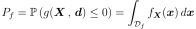
(2)¶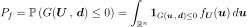
where
is the density function of the distribution in the standard space : that distribution is spherical (invariant by rotation by definition). That property implies that
 the dimension of the random vector
the dimension of the random vector
 and 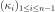 the
and 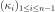 the
 main curvatures of the limit state function at the design
point in the standard space.
main curvatures of the limit state function at the design
point in the standard space.- Breitung’s formula is an asymptotic results: the
usual formula used in the normal standard space, has been generalized
in [lebrun2009b] to standard spaces where the
distribution is spherical, with
 the marginal cumulative
density function of the spherical distributions in the standard space:
the marginal cumulative
density function of the spherical distributions in the standard space:
(3)¶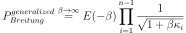
where  is the cumulative distribution function of the
standard 1D normal distribution.
is the cumulative distribution function of the
standard 1D normal distribution.
Hohenbichler’s formula is an approximation of (3):
(4)¶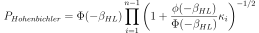
This formula is valid only in the normal standard space and if 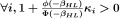.
- Tvedt’s formula (Tvedt, 1988):
(5)¶
![\left\{
\begin{array}{lcl}
\displaystyle P_{Tvedt} & = & A_1 + A_2 + A_3 \\
\displaystyle A_1 & = & \displaystyle \Phi(-\beta_{HL}) \prod_{i=1}^{N-1} \left( 1+\beta_{HL} \kappa_i \right) ^{-1/2}\\
\displaystyle A_2 & = & \displaystyle\left[ \beta_{HL} \Phi(-\beta_{HL}) - \phi(\beta_{HL})\right ] \left[ \prod_{j=1}^{N-1} \left( 1+\beta_{HL} \kappa_i \right) ^{-1/2} - \prod_{j=1}^{N-1} \left( 1+(1 + \beta_{HL}) \kappa_i \right) ^{-1/2} \right ] \\
\displaystyle A_3 & = & \displaystyle(1 + \beta_{HL}) \left[ \beta_{HL} \Phi(-\beta_{HL}) - \phi(\beta_{HL})\right ] \left[ \prod_{j=1}^{N-1} \left( 1+\beta_{HL} \kappa_i \right) ^{-1/2} \right.\\
& & \displaystyle\left. - {\cR}e \left( \prod_{j=1}^{N-1} \left( 1+(i + \beta_{HL}) \kappa_j \right) ^{-1/2} \right)\right ]
\end{array}
\right.](../../_images/math/6a8d331f2372017c33d38c6396294c2ec42e5c68.svg)
where 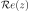 is the real part of the complex number
 and
and  the complex number such that
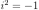 and the cumulative distribution
function of the standard 1D normal distribution.
This formula is valid only in the normal standard space and if
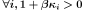 and
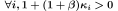.
the complex number such that
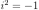 and the cumulative distribution
function of the standard 1D normal distribution.
This formula is valid only in the normal standard space and if
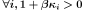 and
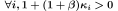.
API:
- See
SORM
Examples:
References:
- Breitung K. a, “Asymptotic approximation for probability integral,” Probability Engineering Mechanics, 1989, Vol 4, No. 4.
- Breitung K. b, 1984, “Asymptotic Approximation for multinormal Integrals,” Journal of Engineering Mechanics, ASCE, 110(3), 357-366.
- Hohenbichler M., Rackwitz R., 1988, “Improvement of second order reliability estimates by importance sampling,” Journal of Engineering Mechanics, ASCE,114(12), pp 2195-2199.
- [lebrun2009b]
- [lebrun2009c]
- Tvedt L. 1988, “Second order reliability by an exact integral,” proc. of the IFIP Working Conf. Reliability and Optimization of Structural Systems, Thoft-Christensen (Ed), pp377-384.
- Zhao Y. G., Ono T., 1999, “New approximations for SORM : part 1”, Journal of Engineering Mechanics, ASCE,125(1), pp 79-85.
- Zhao Y. G., Ono T., 1999, “New approximations for SORM : part 2”, Journal of Engineering Mechanics, ASCE,125(1), pp 86-93.
- Adhikari S., 2004, “Reliability analysis using parabolic failure surface approximation”, Journal of Engineering Mechanics, ASCE,130(12), pp 1407-1427.